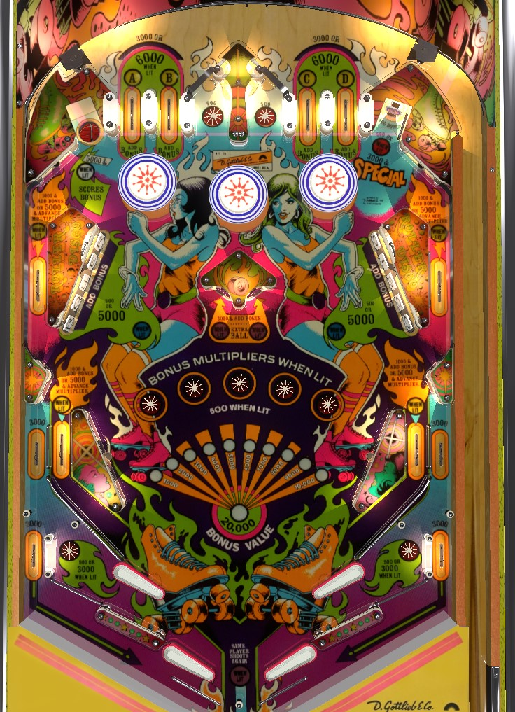

Not to be confused with Roller Coaster (Gottlieb, 1971) or Rollergames (Bally Williams, 1990).
If the ball is in control on an upper flipper, aim for the gates at the top of the table between the two pairs of top lanes to collect more top lanes; A-B-C-D top lanes light other lanes around the table for bonus multipliers. If the ball is in control on a lower flipper, aim for drop targets, which score 500 + bonus advance to start, or 5,000 + bonus advance after that bank has been completed once. Upper left saucer collects bonus if the base bonus is maxed at 20,000; the collect includes multipliers, but resets the base bonus.
Top lanes score 6,000 points when lit, or 3,000 when unlit. Roll through a lit lane to unlight it and collect the associated letter. Each A-B-C-D letter collected lights a yellow rollover lane around the table to advance the bonus multiplier: A is the lane behind the left drop targets, B is the upper left in lane, C is the upper right in lane, and D is the lane behind the right drop targets. In a 3-ball game, A and D are tied together, so that collecting either one gives credit for both, but in a 5 ball game, all lanes must be collected separately. The yellow lanes score 1,000 points and a bonus advance when not lit, 5,000 points and a bonus multiplier when lit, and 15,000 points if bonus multiplier is maxed at 5x. Collecting all of A-B-C-D in one ball lights the upper right standup target for a special, even if the associated bonus multipliers have not yet been collected. A-B-C-D and all bonus multipliers resets from ball to ball.
To collect additional top lanes during the ball after the plunge, use the upper flippers to make a shot that goes just wide of the standup targets in the center of the table and access the lanes next to the top lanes that have a 500 point star rollover and a one-way gate that directs the ball toward one of the pairs of top lanes.
At the start of a ball, any target down in either bank scores 500 points and a bonus advance. Completing a bank at any time immediately resets it. Once a bank has been completed, any drop targets hit in that bank score 5,000 points and a bonus advance for the rest of the ball. Completing both banks of targets at least once lights the center standup targets alternately for extra ball; these targets also score 2,000 points and a bonus advance.
When not lit, the saucer scores 5,000 points. The saucer is lit whenever the base bonus is maxed out at 20,000 points; shooting the saucer when lit collects the entire bonus including multiplier, but then resets the base bonus back to 1,000 points (multipliers are kept intact). Any shot to the saucer during a ball also lights the lower in lanes for 3,000 points instead of 400 for the rest of the ball.
Scores 500 points and a bonus advance, or 3,000 and a special when lit. This target is lit only after collecting all four A-B-C-D letters from the top lanes.
In a way, Roller Disco has two table bottoms stacked on top of each other. Outside of the slingshots are two upper in lanes, which feed the upper flippers directly: these are yellow lanes that can be lit for bonus multipliers as described in the A-B-C-D section above. Outside of those are the upper out lanes, which score 3,000 points and drop the ball into the lower in/out lane dividers. Nudge the ball off of pegs to encourage it to go into the lower in lane, which feeds a lower flipper; lower in lanes score 500 points or 3,000 when lit, and are lit after the saucer is made on a ball. Any ball that goes down an upper out lane can be saved off the pegs and into the lower in lane. If the ball rattles around too much or a nudge is mistimed, it can fall into the lower out lane, which scores an additional 3,000 points and drains.
There is a center pin between/below the flippers. It tends not to be very bouncy or helpful.
Bonus is advanced by top lanes, upper side lanes, upper in lanes, any standup target, and any drop target. One advance is worth 1,000 points. Max base bonus is 20,000 points. To multiply the bonus, collect an A-B-C-D letter to light one of the yellow rollover lanes, then make that lane to increase the multiplier. Max bonus is 5x 20,000 = 100,000 points. When base bonus is maxed out, shoot the upper left saucer to collect the bonus, which resets the base bonus count but not the multiplier. There is no way to hold base bonus, multipliers, or collected A-B-C-D letters over from one ball to the next.
In competition/novelty play, extra balls and specials score 50,000 points.
In a 3-ball game, pop bumpers score 1,000 points, and the A and D top lanes are tied together, so that making either one gives credit for both. In a 5-ball game, bumpers score 100 points and all four A-B-C-D top lanes must be earned separately.